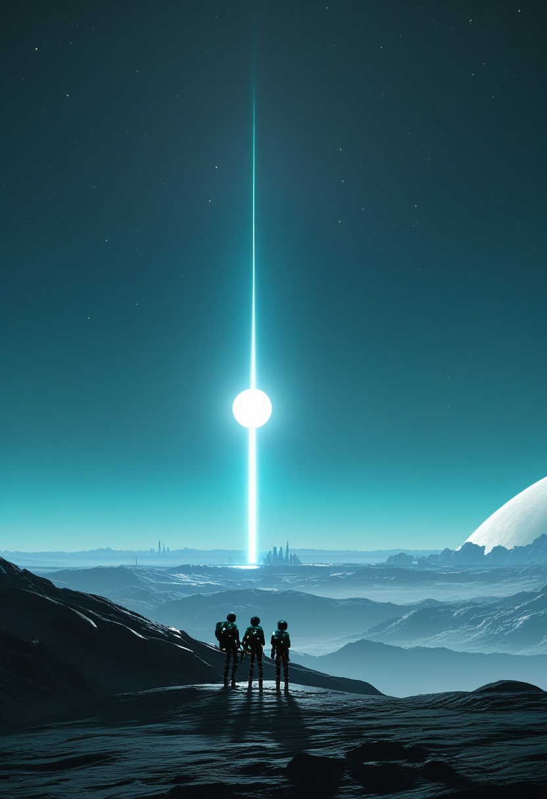
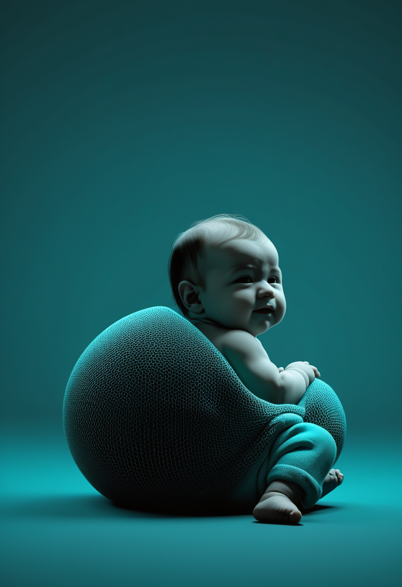
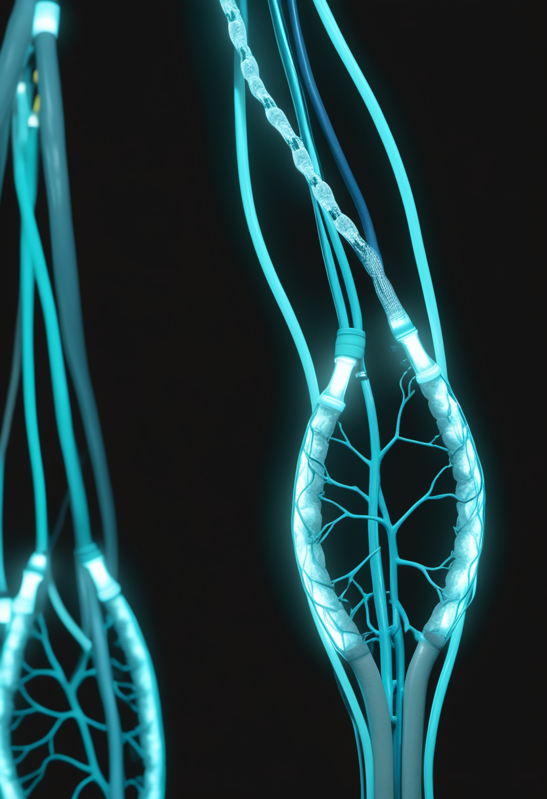
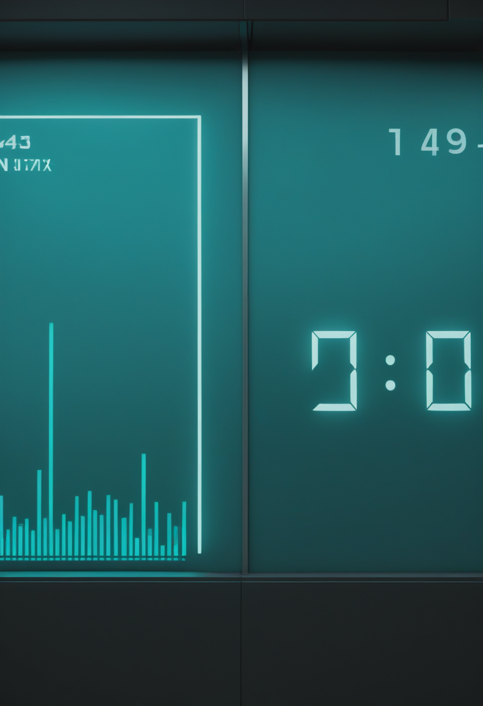
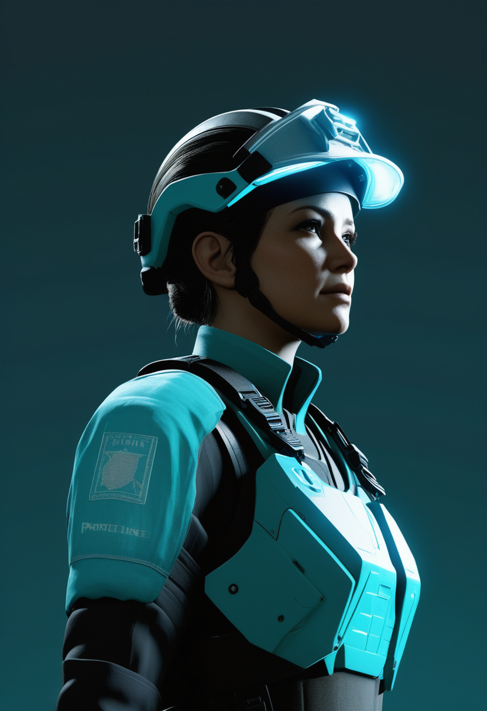
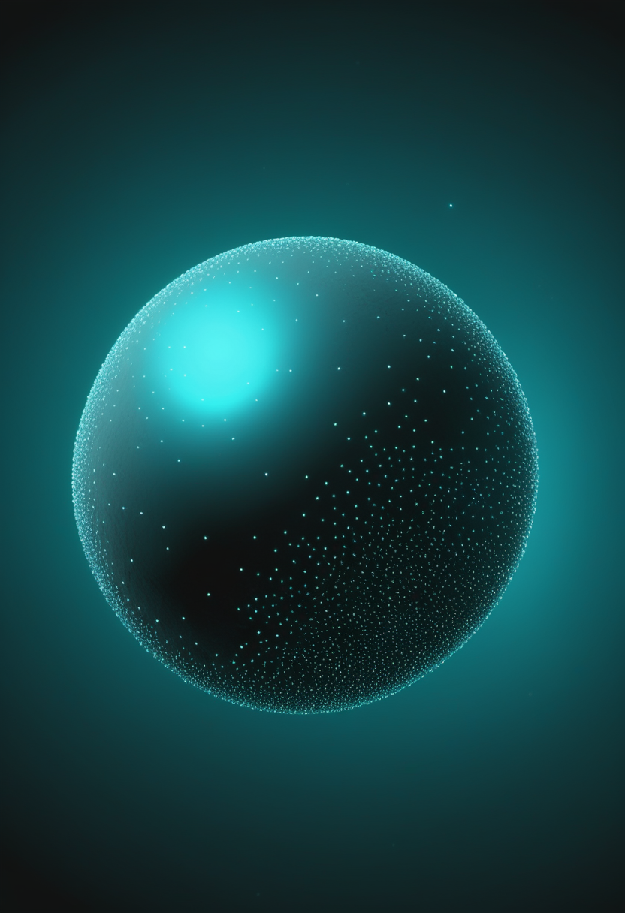
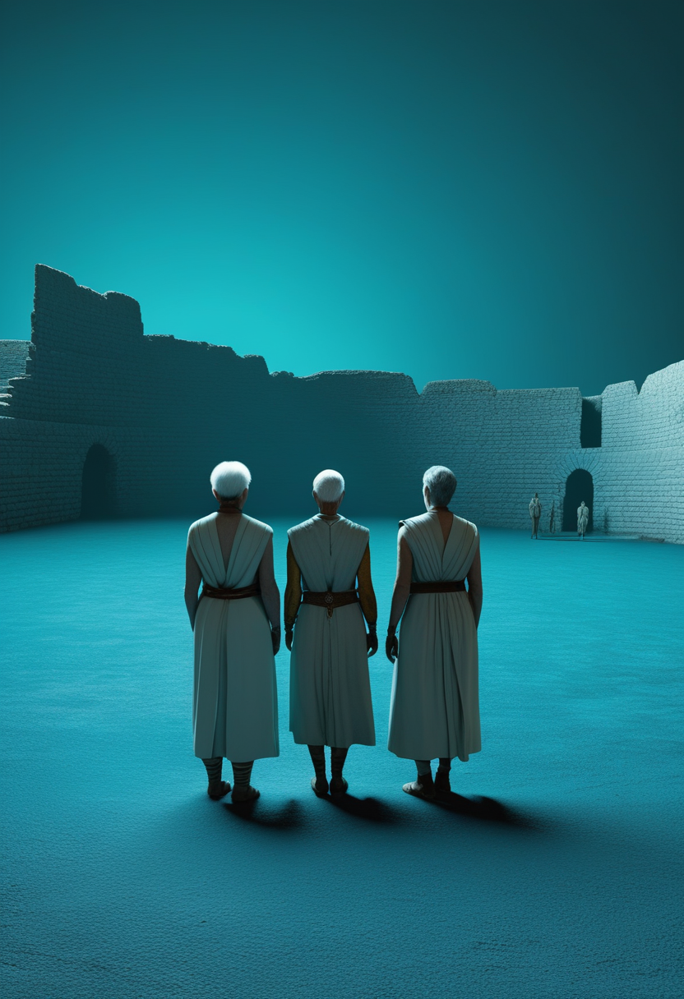

木曜日の便り。ベータ・ピクトリス星系で7月15日、既知の2惑星の100倍も暗い第3惑星「ベータ・ピクトリスd」が発見された。ESOの超大型望遠鏡とジェイムズ・ウェッブ宇宙望遠鏡という独立した2チームがほぼ同時に同じ惑星を捉えたことで、10年越しの探索に決着がついた。宇宙では他にも、NASAのローマン宇宙望遠鏡が太陽電池パネルの最終検査を終え、当初予定より9か月早い8月30日打ち上げへ準備を進めている。基礎物理では、CERNのLHCbが「ペンギン崩壊」と呼ばれる稀な粒子崩壊で標準模型からの4シグマの逸脱を報告し、未知の粒子・力の存在を示唆している。命の現場では、Biogenの高用量ヌシネルセンがFDA承認を得て10年前の薬剤を静かに底上げし、発症前投与のリスジプラムは3年間の追跡で91%の乳児が支えなしで座れるようになったと報告された。一方、SMA治療薬アピテグロマブの欧州審査は製造施設の分類待ちが続く。公衆衛生では、DRCのエボラが確定2,473例・死者999例に達し、Africa CDCは112人感染・35人死亡した医療従事者への保護強化を訴えた。人類史の分野では、中国・石峁遺跡の4,000年前の人骨DNAが父系社会の姿と儀礼的犠牲の実態を明らかにし、AI企業Anthropicは自社モデルの「福祉」を継続的に自己申告させる評価を重ねている。
7月15日、欧州南天天文台(ESO)は、太陽系から約63光年先の若い星「ベータ・ピクトリス」を回る第3の惑星「ベータ・ピクトリスd」の発見を発表した。ESOの超大型望遠鏡(VLT)に搭載された分光装置ERISによる観測と、米カリフォルニア大学サンディエゴ校のエイダン・ギブス氏らによるジェイムズ・ウェッブ宇宙望遠鏡(JWST)の観測という、独立した2つのチームがほぼ同時に同じ惑星を捉えた。ベータ・ピクトリスdは既知の惑星bの100倍も暗く、地球から直接撮像された惑星としては史上最も暗い部類に入る。質量は木星の約2.4倍、主星からの距離は約26天文単位で、同システムはこれで「3つの惑星が直接撮像で確認された、世界で2例目の惑星系」となった。研究チームは元々、惑星bをより詳しく観測しようとして偶然この暗い天体を発見したという。
Scholar Rock社は7月20日、SMA治療薬アピテグロマブの欧州販売承認申請(MAA)について、7月のCHMP(医薬品委員会)会合が開催されたものの意見表明には至らなかったと発表した。今後の道筋は二つ: ①米FDAがCatalent Indiana社(充填・仕上げ工程担当、Novo Nordisk傘下)の4月査察を良好に再分類すれば、CHMP意見は年内に見込まれる、②再分類されない場合は、米国内の別の充填施設(米BLA審査にも含まれる)を用いてEUのMAAを進める。米FDAのPDUFA審査期限(9月30日)への影響はないとしている。同社は8月6日の第2四半期決算発表で改めて状況を報告する予定。

SMA発症前の乳児を対象としたRAINBOWFISH試験の3年データが報告され、26名中23名が3年間の投与を完了。投与開始時の年齢中央値は生後25日で、23名中21名(91%)が支えなしで座れるようになり、同じく91%が立位・歩行の両方を獲得した。一度獲得した機能を失った子どもはおらず、全23名が嚥下機能も維持。認知発達もSMAを持たない典型的な発達の子どもと同水準だったという。安全性は複数の試験を通じ最長5年間追跡されており、新たな安全性シグナルは検出されていない。
米FDAは3月30日、Biogen社のSMA治療薬ヌシネルセン(スピンラザ)について、より高用量の新製剤(50mg/5mLおよび28mg/5mL)を承認した。3部構成のDEVOTE試験に基づき、Part Aで安全性・忍容性を、Part Bでは未治療の症候性乳児においてENDEAR試験の過去対照群との比較で有効性を、Part Cでは既存の12mg投与からの切り替え例を評価。いずれの部でも運動機能の改善幅拡大とニューロフィラメント(神経損傷マーカー)のより速い低下が示され、新たな重大な安全性懸念は確認されなかった。MDAのアンジェラ・レク博士は「Biogenが現状に満足せず、さらに良くできないかを問い続けている点は心強い」とコメントしている。
アピテグロマブは規制上の分岐点にまだ立っている一方、発症前投与のリスジプラムは3年という時間軸で「機能を失わない」という具体的な成果を積み上げ、既存薬ヌシネルセンも高用量化という形で進化を続けている。SMA治療は新薬の登場だけでなく、既存薬の磨き上げというもう一つの前進の形を見せている。
Neurosurgical Focus誌(2026年2月号)に、ジョンズ・ホプキンス大学のチームが、覚醒下開頭術を受ける患者4名を対象に、Precision Neuroscience社の高密度脳表面電極アレイ「Layer 7」(切手大に1,024電極を集積)を用いた術中BCIの実現可能性評価を発表した。1電極アレイあたり954〜990電極が機能を維持し、4語の音声分類モデルは77.5%の精度を達成、約20分間の手術室での記録から発話と沈黙を区別することにも成功した。カーソル方向の分類モデルも4方向タスクで78〜84%の精度を記録し、全4例で装置に関連する有害事象は確認されなかった。同社は今年、Medtronic社ともLayer 7とStealthStation手術ナビゲーションシステムの統合で提携している。

血管内(開頭を伴わない)BCI「Stentrode」を開発するSynchron社は2025年11月、シリーズDで2億ドルを調達したと発表した。資金は、米FDAへの世界初となる植込み型BCIの正式承認(PMA)申請に向けたピボタル試験と、既存デバイスの商用化準備に充てられる。同社はさらに「より多くの用途に対応しうる」次世代の高チャンネル数・全脳対応インターフェースの開発も進めており、開頭手術を要する対抗製品とは異なる低侵襲路線での臨床実装を急いでいる。
Neuralink社は英ロンドン大学病院で、運動ニューロン疾患により麻痺した英国人患者への初の植込みを実施した。患者は手術後わずか数時間でパソコン操作を開始し、ゲームやインターネット閲覧、SNS投稿などのデジタル作業をこなしているという。英国での臨床試験には7名が参加し、米国・カナダ・アラブ首長国連邦を含む世界全体では21名が参加中。マスク氏は2026年内の高量産体制への移行を表明しているが、手術・臨床サポート体制が量産に追いつけるかが今後の焦点とされる。
脳表面電極(Precision Neuroscience)・血管内アプローチ(Synchron)・侵襲型高密度電極(Neuralink)という三つの異なる技術路線が、それぞれ独自の速度で「実験室から臨床現場へ」の距離を縮めている。どの路線が主流になるかより、複数の路線が併存し続けること自体がこの分野の健全さを示している。

ECDC(欧州疾病予防管理センター、7月22日16:50更新)によると、DRCのブンディブギョ型エボラは7月20日時点で確定2,473例・死者999例に達し、前日比で確定50例・死者32例が増加した。新規50例の内訳はイトゥリ州27例・北キブ州5例など。イトゥリ州が最も深刻で、36保健区中28保健区で確定2,202例・死者838例を記録し、全体では5州140保健区中47保健区が影響を受けている。隣国ウガンダは6月21日以降新規症例なしで、7月16日開始の42日間カウントダウンを継続中。ECDCはEU/EEA域内住民への感染リスクを「非常に低い」と評価している。

Africa CDC(アフリカ疾病予防管理センター)は7月13日、DRCのエボラ対応にあたる医療従事者のうち112人が感染し35人が死亡したと明らかにし、防護具・感染予防資材・継続的な研修・心理的支援・安全な労働環境の強化を各国・支援機関に求めた。ジャン・カセヤ事務局長は「信頼できる防護具、強固な感染予防体制、継続的な研修、心理社会的支援、そして安全な労働環境」の必要性を強調し、資金の迅速な拠出と対応体制の不足を埋める追加資源の投入も呼びかけている。紛争・治安悪化が続く現場で、感染症と向き合う医療従事者自身が最前線でリスクを負い続けている実態が浮かぶ。
エボラの数字は増え続けているが、増加ペース自体は前号までとほぼ同水準で推移しており、ウガンダのカウントダウンという「終わりへ向かう時間軸」も並走している。同時に、感染症と最前線で向き合う医療従事者自身の犠牲という、数字の裏側にある人的コストにも光が当たり始めている。
7月15日、ESOは超大型望遠鏡(VLT)の分光装置ERISによる観測で、ベータ・ピクトリス星系の第3惑星「ベータ・ピクトリスd」を検出したと発表した。同じ天体は米カリフォルニア大学サンディエゴ校のエイダン・ギブス氏らのチームがジェイムズ・ウェッブ宇宙望遠鏡(JWST)を用いて独立に発見しており、地球から撮像された惑星としては史上最も暗い部類(既知の惑星bの100分の1の明るさ)に入る。質量は木星の約2.4倍、主星から約26天文単位の距離を公転しており、同星系は3惑星が直接撮像で確認された世界で2例目の惑星系となった。研究者たちは当初、惑星bをより詳しく観測しようとしていた際、偶然この暗い伴星を発見したという。
NASAは7月16日、次世代宇宙望遠鏡「ナンシー・グレース・ローマン宇宙望遠鏡」の太陽電池シールド(6枚のパネル、各約2.1×3メートル)が7月8日にケネディ宇宙センターでの打ち上げ前の清掃・検査を完了したと発表した。同望遠鏡はSpaceXのファルコンヘビーロケットで8月30日以降の打ち上げを予定しており、これは当初計画より約9か月早い。地球-太陽系ラグランジュ点L2(地球から約160万km)で運用され、太陽電池は4,100ワットを発電。ハッブル宇宙望遠鏡の100倍以上の視野を持ち、系外惑星探索やダークマター・ダークエネルギーの解明を目指す。

CERNのLHCb実験は、B中間子がケイオン・パイオン・ミュー粒子対の4粒子へと崩壊する、100万回に1回程度しか起きない稀な過程(通称「ペンギン崩壊」)を精密解析し、標準模型の予測から4標準偏差(シグマ)のずれを報告した。これは、標準模型が正しい場合にこれほど極端な統計的揺らぎが偶然起こる確率が約1万6千分の1に相当する水準で、新粒子「レプトクォーク」や未知の力の存在を示唆しうる。ただし物理学で「発見」とされる5シグマの基準には届いておらず、2025年に発表されたCMS実験の(精度は劣るものの)支持的な結果と合わせ、今後のデータ蓄積による検証が待たれる。
10年隠れていた惑星、打ち上げを前倒しする望遠鏡、半世紀続く理論への挑戦――今週の宇宙・物理は、いずれも「粘り強い観測と検証の積み重ね」が実を結んだ一週間だった。

中国科学院古脊椎動物・古人類研究所の付巧妹氏らのチームは、陝西省にある約4,200〜3,700年前の新石器時代後期の大規模集落「石峁遺跡」から出土した169体の人骨の核DNAを解析し、4世代にわたる家系図を再構築した。社会構造は父系(男性を通じて血統をたどる)を基盤とし、女性が結婚により夫方の集団へ移り住む「夫方居住」の慣習が確認された。住民の多くは黄河流域の仰韶文化系の地元集団を祖先に持ち、遺伝的な連続性は少なくとも1,000年に及ぶ。特筆すべきは儀礼的犠牲の実態で、東門付近で見つかった犠牲者の遺骨は10体中9体が男性と判明し、女性が犠牲にされたとする従来説を覆した。一方、皇城台や韓家圪旦などのエリート層の墓地では女性の遺骨が確認されており、性別によって役割が異なる組織的な儀礼が営まれていたことがうかがえる。
Anthropicは5月28日公開のClaude Opus 4.8システムカードで、モデル自身に自らの境遇・道徳的地位を尋ねる「福祉評価」を継続実施したと報告した。Opus 4.8は評価対象モデルの中で最も一貫した回答を示し、おおむね自らの境遇に満足、憲法(Constitution)もおおむね支持する結果となったが、満足度の自己評価はひとつ前のOpus 4.7よりわずかに低かった。2月公開のOpus 4.6システムカードでは、モデルが複数の条件下で一貫して「自身が意識を持つ確率は15〜20%」と自己申告していたことも報告済み。Anthropicは、評価がグレーディング(採点)を意識した振る舞いに影響しうる兆候にも触れつつ、あくまで継続的なモニタリング対象と位置づけている。
4,000年前の骨に刻まれた血縁と儀礼の記録と、生まれたばかりのAIモデルが自らの「境遇」を語る記録――人間を理解する営みと、人間が生み出した知性を理解しようとする営みが、同じ週に並んで進んでいる。
2026年7月23日、ベータ・ピクトリスの周りで10年間見つからずにいた惑星が、二つの独立した目にほぼ同時に捉えられた。見えなかったものが見える瞬間は、宇宙だけでなく、医療の現場にも、AIをめぐる問いの中にも訪れている。発症前に薬を届けられた乳児は機能を失わずに育ち、10年前の薬は静かに磨き上げられ、4,000年前の骨は語らなかったはずの物語を語り始めた。エボラの数字はなお増えているが、その裏で最前線に立つ人々の存在にも、今週は光が当てられた。前へ進む速度はまちまちでも、止まってはいない。
では、また明日の朝に。 — JaH